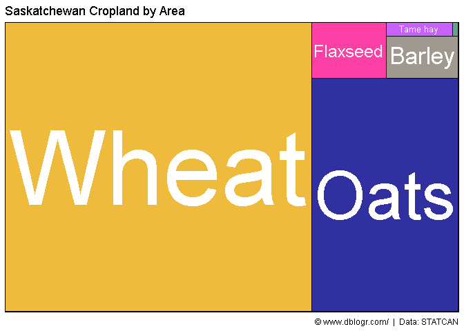
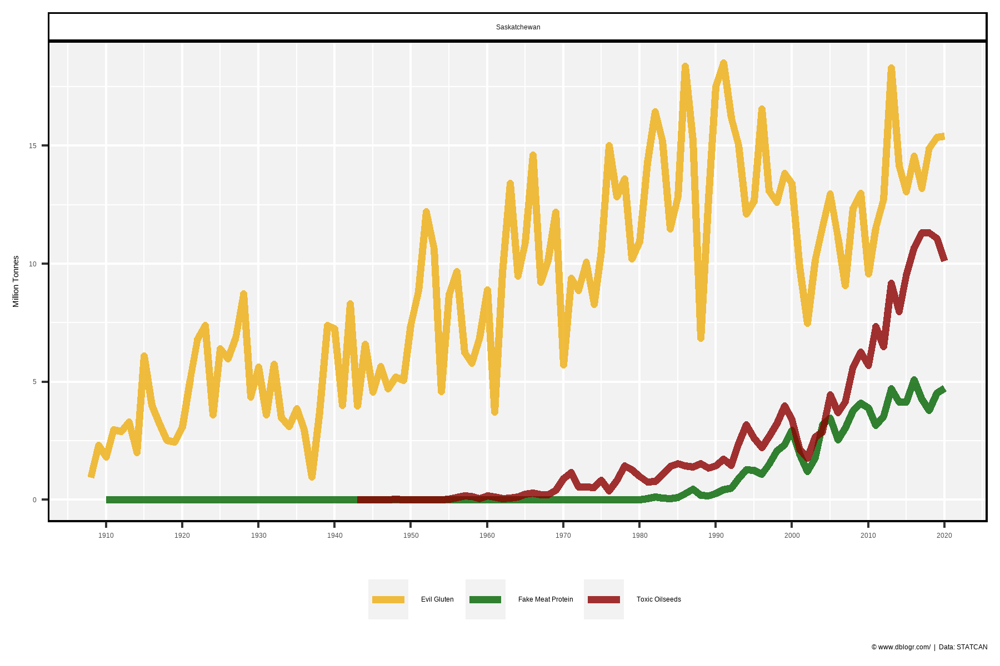

# devtools::install_github("derekmichaelwright/agData")
library(agData) # Loads: tidyverse, ggpubr, ggbeeswarm, ggrepel
library(treemapify) # geom_treemap()
library(gganimate)
Crop Production
# Create function to determine top crops
cropList <- function(measurement, years) {
# Prep data
xx <- agData_STATCAN_Crops %>%
filter(Area == "Saskatchewan", Measurement == measurement, Year %in% years)
# Get top 15 crops from each year
topcrops <- function(x, year) {
x <- x %>% filter(Year == year) %>% arrange(desc(Value)) %>%
pull(Crop) %>% unique() %>% as.character()
}
myCrops <- NULL
for(i in years) { myCrops <- c(myCrops, topcrops(xx, i)) }
unique(myCrops)
}
Crop Production 1908, 1961, 2020
# Prep data
myCrops <- cropList(measurement = "Production", years = c(2020, 1961, 1908))
xx <- agData_STATCAN_Crops %>%
filter(Area == "Saskatchewan", Year %in% c(2020, 1961, 1908),
Measurement == "Production", Crop %in% myCrops) %>%
mutate(Crop = factor(Crop, levels = myCrops) )
# Plot
mp <- ggplot(xx, aes(x = Crop, y = Value / 1000000, fill = Crop)) +
geom_bar(stat = "identity", color = "Black", alpha = 0.8) +
facet_grid(Year ~ .) +
scale_fill_manual(values = alpha(agData_Colors, 0.75)) +
theme_agData(legend.position = "none",
axis.text.x = element_text(angle = 45, hjust = 1)) +
labs(title = "Saskatchewan - Crop Production", y = "Million Tonnes", x = NULL,
caption = "\xa9 www.dblogr.com/ | Data: STATCAN")
ggsave("crops_saskatchewan_01.png", mp, width = 6, height = 5)

Crop Area 1908, 1961, 2020
# Prep data
myCrops <- cropList(measurement = "Seeded area", years = c(2020, 1961, 1908))
xx <- agData_STATCAN_Crops %>%
filter(Area == "Saskatchewan", Year %in% c(2020, 1961, 1908),
Measurement == "Seeded area", Crop %in% myCrops) %>%
mutate(Crop = factor(Crop, levels = myCrops) )
# Plot
mp <- ggplot(xx, aes(x = Crop, y = Value / 1000000, fill = Crop)) +
geom_bar(stat = "identity", color = "Black", alpha = 0.8) +
facet_grid(Year ~ .) +
scale_fill_manual(values = alpha(agData_Colors, 0.75)) +
theme_agData(legend.position = "none",
axis.text.x = element_text(angle = 45, hjust = 1)) +
labs(title = "Saskatchewan - Area Seeded", y = "Million Hectares", x = NULL,
caption = "\xa9 www.dblogr.com/ | Data: STATCAN")
ggsave("crops_saskatchewan_02.png", mp, width = 6, height = 5)

Race Chart
# Prep data
xx <- agData_STATCAN_Crops %>%
filter(Area == "Saskatchewan",
Measurement == "Seeded area") %>%
group_by(Year) %>%
arrange(Year, -Value) %>%
mutate(Rank = 1:n()) %>%
filter(Rank < 10) %>%
arrange(desc(Year)) %>%
mutate(Crop = factor(Crop, levels = unique(.$Crop)))
# Plot
mp <- ggplot(xx, aes(xmin = 0, xmax = Value / 1000000,
ymin = Rank - 0.45, ymax = Rank + 0.45, y = Rank,
fill = Crop)) +
geom_rect(alpha = 0.8, color = "black") +
scale_fill_manual(values = alpha(agData_Colors, 0.75)) +
scale_x_continuous(limits = c(-2.5,10), breaks = c(0,2,4,6,8,10)) +
geom_text(col = "black", hjust = "right", aes(label = Crop), x = -0.1) +
scale_y_reverse() +
theme_agData(legend.position = "none",
axis.text.y = element_blank(),
axis.ticks.x = element_blank()) +
labs(title = "Saskatchewan - Area Seeded",
subtitle = "Year: {frame_time}",
x = "Million Hectares", y = NULL,
caption = "\xa9 www.dblogr.com/ | Data: STATCAN") +
# gganimate
facet_null() +
geom_text(x = 6, y = -8,
aes(label = as.character(Year)),
size = 30, col = "black") +
transition_time(Year)
mp <- animate(mp, nframes = 2*(max(xx$Year) - min(xx$Year)), fps = 5,
end_pause = 20, width = 600, height = 400)
anim_save("crops_saskatchewan_gifs_01.gif", mp)

Per Person
# Prep data
pp <- agData_STATCAN_Population %>%
filter(Month == 1, Area == "Saskatchewan", Year == 2020) %>%
pull(Value)
myCrops <- cropList(measurement = "Production", years = 2020)
xx <- agData_STATCAN_Crops %>%
filter(Area == "Saskatchewan", Year %in% 2020,
Measurement == "Production", Crop %in% myCrops) %>%
mutate(Crop = factor(Crop, levels = myCrops),
PerPerson = Value / pp)
# Plot
mp <- ggplot(xx, aes(x = Crop, y = PerPerson, fill = Crop)) +
geom_bar(stat = "identity", color = "Black", alpha = 0.8) +
geom_label(aes(label = round(PerPerson,1)), vjust = -0.1, fill = "White",
size = 2.5, label.padding = unit(0.15, "lines")) +
facet_grid(Year~.) +
scale_y_continuous(limits = c(0,14), expand = c(0,0)) +
scale_fill_manual(values = alpha(agData_Colors, 0.75)) +
theme_agData(legend.position = "none",
axis.text.x = element_text(angle = 45, hjust = 1)) +
labs(title = "Saskatchewan - Crop Production Per Person", y = "1000 kg", x = NULL,
caption = "\xa9 www.dblogr.com/ | Data: STATCAN")
ggsave("crops_saskatchewan_03.png", mp, width = 6, height = 4)

All Crops
# Prep data
xx <- agData_STATCAN_Crops %>%
filter(Area == "Saskatchewan", Measurement == "Seeded area")
myCrops <- unique(c(cropList(measurement = "Seeded area", years = 2017), as.character(xx$Crop)))
xx <- xx %>% mutate(Crop = factor(Crop, levels = myCrops))
# Plot
mp <- ggplot(xx, aes(x = Year, y = Value / 1000000, color = Crop)) +
geom_line(alpha = 0.8) +
facet_wrap(Crop ~ ., ncol = 6) +
scale_color_manual(values = alpha(agData_Colors, 0.75)) +
theme_agData(legend.position = "none",
axis.text.x = element_text(angle = 45, hjust = 1)) +
labs(title = "Saskatchewan Crops - Area Seeded", y = "Million Hectares", x = NULL,
caption = "\xa9 www.dblogr.com/ | Data: STATCAN")
ggsave("crops_saskatchewan_04.png", mp, width = 6, height = 5)

Treemap
# Prep data
xx <- agData_STATCAN_Crops %>%
filter(Area == "Saskatchewan", Year == 2020, Measurement == "Seeded area") %>%
arrange(desc(Value)) %>%
mutate(Crop = factor(Crop, levels = unique(.$Crop)))
# Plot
mp <- ggplot(xx, aes(area = Value, fill = Crop, label = Crop)) +
geom_treemap(color = "black", alpha = 0.8, size = 1.5) +
geom_treemap_text(place = "centre", grow = T, color = "white") +
scale_fill_manual(values = alpha(agData_Colors, 0.75)) +
theme_agData(legend.position = "none") +
labs(title = "Saskatchewan Cropland", subtitle = "Seeded Area 2020",
caption = "\xa9 www.dblogr.com/ | Data: STATCAN")
ggsave("crops_saskatchewan_05.png", mp, width = 6, height = 4)

# Prep data
xx <- agData_STATCAN_Crops %>%
filter(Area == "Saskatchewan", Measurement == "Seeded area") %>%
arrange(desc(Year), desc(Value)) %>%
mutate(Crop = factor(Crop, levels = unique(.$Crop)))
# Plot
mp <- ggplot(xx, aes(area = Value, fill = Crop, label = Crop)) +
geom_treemap(layout = "fixed", color = "black", alpha = 0.8, size = 1.5) +
geom_treemap_text(layout = "fixed", place = "centre", grow = T, color = "white") +
scale_fill_manual(values = alpha(agData_Colors, 0.75)) +
theme_agData(legend.position = "none") +
labs(title = "Saskatchewan Cropland - Seeded Area",
subtitle = "Year: {frame_time}",
caption = "\xa9 www.dblogr.com/ | Data: STATCAN") +
# gganimate
transition_time(Year)
mp <- animate(mp, nframes = 2*(max(xx$Year) - min(xx$Year)), fps = 10,
end_pause = 20, width = 600, height = 400)
anim_save("crops_saskatchewan_gifs_02.gif", mp)

Farm Area
# Prep data
xx <- agData_STATCAN_FarmLand_Use %>%
filter(Area == "Saskatchewan", Item == "Total area of farms",
Unit == "Hectares", !is.na(Value))
# Plot
mp <- ggplot(xx, aes(x = Year, y = Value / 1000000)) +
geom_line(color = "darkgreen", size = 1.25, alpha = 0.8) +
scale_x_continuous(breaks = seq(1920, 2020, 10)) +
theme_agData() +
labs(title = "Total area of farms in Saskatchewan", y = "Million Hectares", x = NULL,
caption = "\xa9 www.dblogr.com/ | Data: STATCAN")
ggsave("crops_saskatchewan_06.png", mp, width = 6, height = 4)

Summerfallow
# Prep data
xx <- agData_STATCAN_Crops %>%
filter(Area == "Saskatchewan", Crop == "Summerfallow",
Measurement == "Seeded area")
# Plot
mp <- ggplot(xx, aes(x = Year, y = Value / 1000000)) +
geom_line(color = "darkgreen", size = 1.25, alpha = 0.8) +
scale_x_continuous(breaks = seq(1920, 2020, 10)) +
theme_agData() +
labs(title = "Summerfallow in Saskatchewan", y = "Million Hectares", x = NULL,
caption = "\xa9 www.dblogr.com/ | Data: STATCAN")
ggsave("crops_saskatchewan_07.png", mp, width = 6, height = 4)

# Prep data
x1 <- agData_STATCAN_Crops %>%
filter(Area == "Saskatchewan", Measurement == "Production",
Crop %in% c("Lentils","Peas","Beans","Chickpeas")) %>%
group_by(Year) %>%
summarise(Value = sum(Value)) %>%
mutate(Crop = "Fake Meat Protein")
x2 <- agData_STATCAN_Crops %>%
filter(Area == "Saskatchewan", Measurement == "Production",
Crop %in% c("Canola","Wheat")) %>%
mutate(Crop = plyr::mapvalues(Crop, c("Canola","Wheat"), c("Toxic Oilseeds","Evil Gluten")))
xx <- bind_rows(x1, x2)
# Plot
mp <- ggplot(xx, aes(x = Year, y = Value / 1000000, color = Crop)) +
geom_line(size = 1.5, alpha = 0.8) +
facet_wrap("Saskatchewan" ~ .) +
scale_color_manual(name = NULL, values = c("darkgoldenrod2","darkgreen","darkred")) +
scale_x_continuous(breaks = seq(1910,2020,10)) +
theme_agData(legend.position = "bottom") +
labs(y = "Million Tonnes", x = NULL,
caption = "\xa9 www.dblogr.com/ | Data: STATCAN")
ggsave("crops_saskatchewan_08.png", mp, width = 6, height = 4)

© Derek Michael Wright www.dblogr.com/